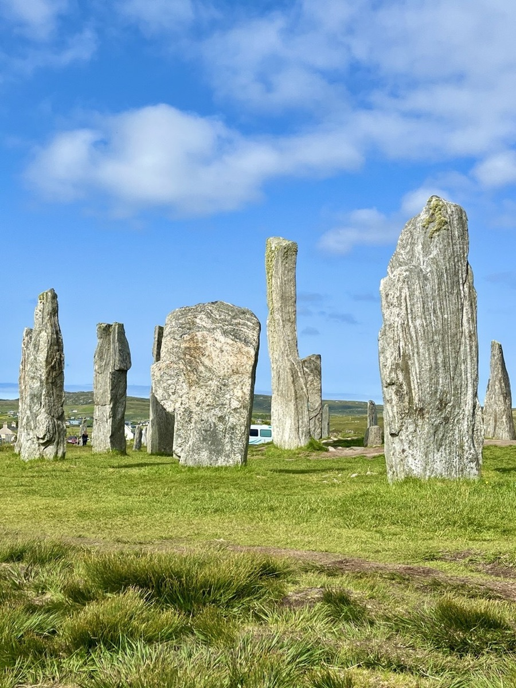
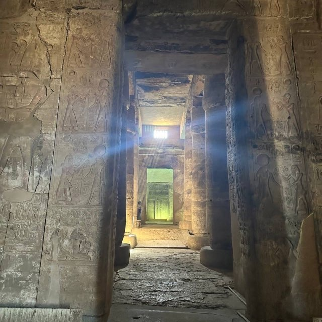
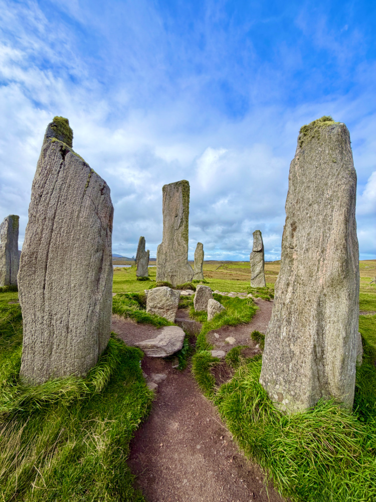
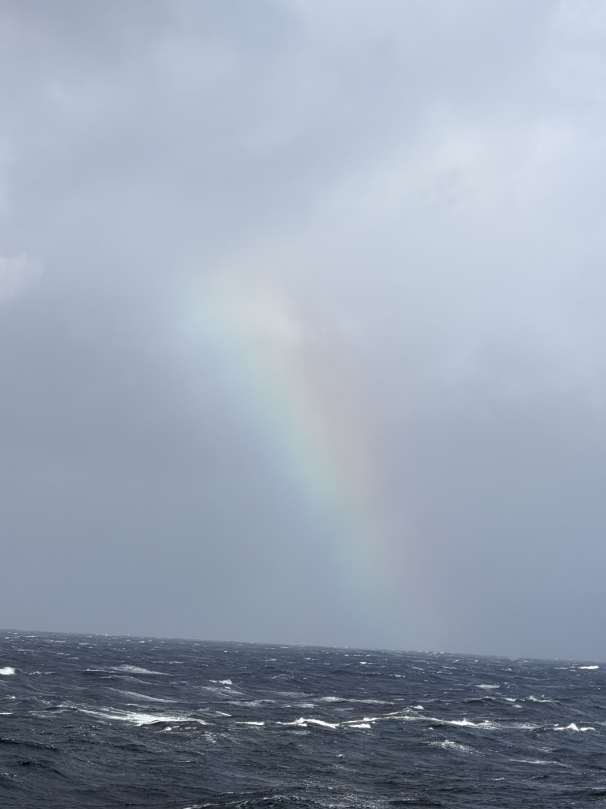
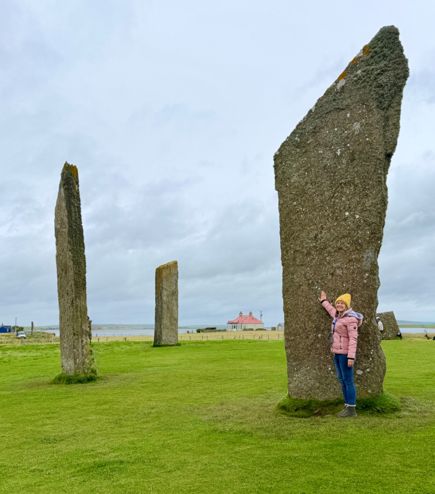
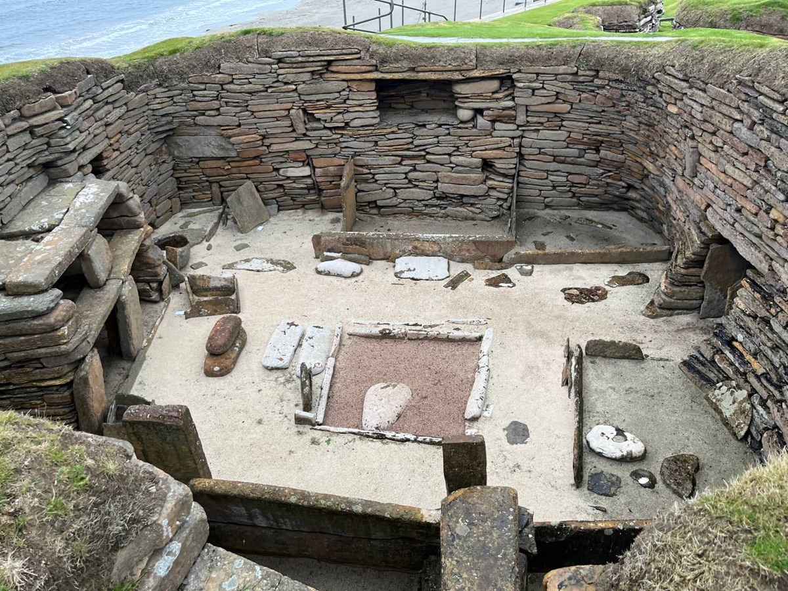
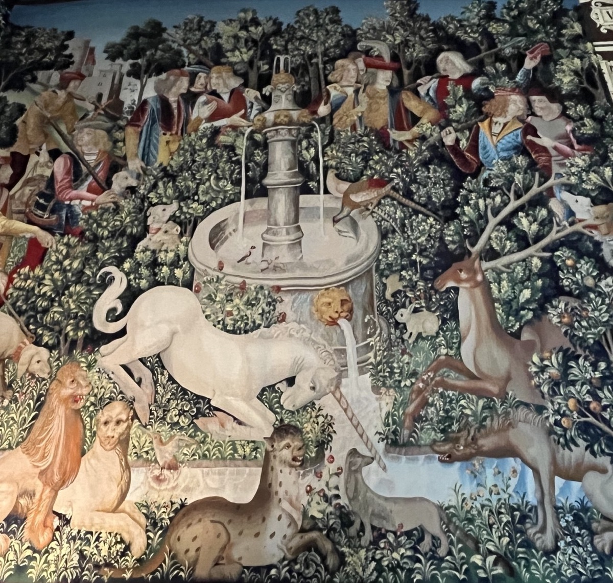
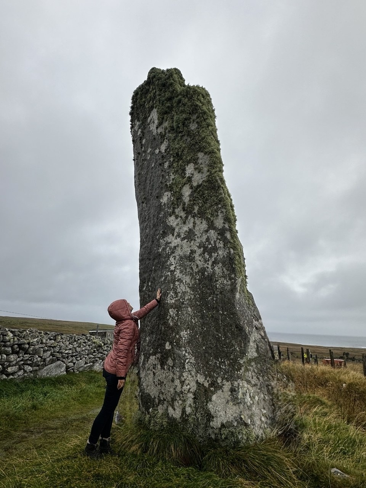
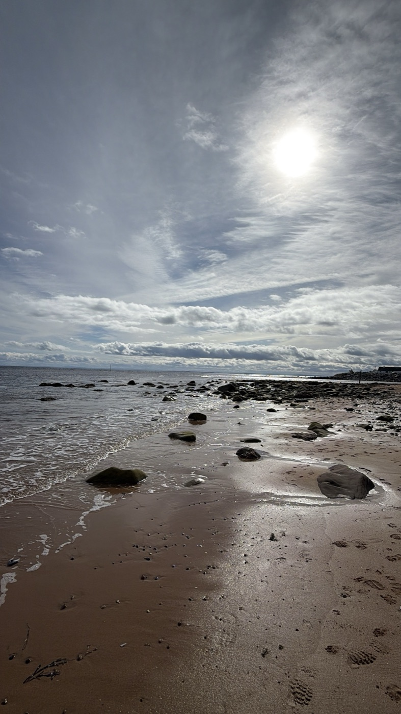
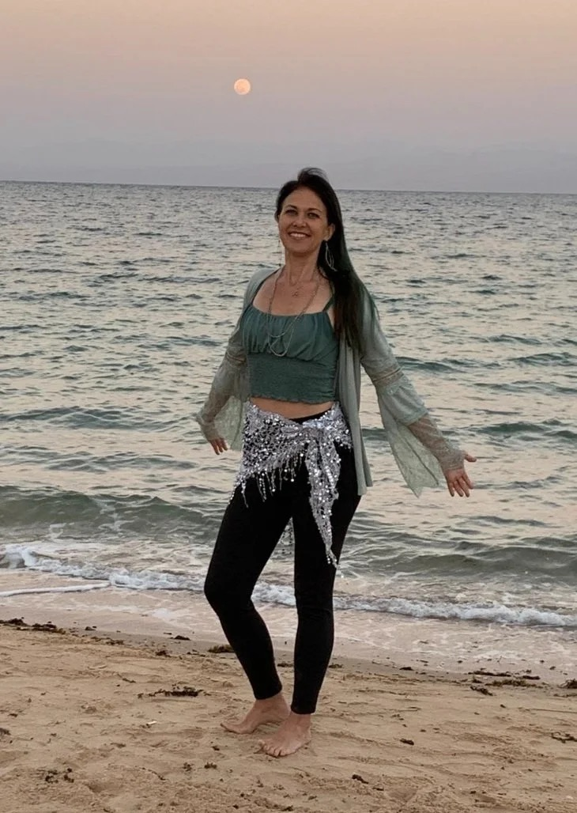

Waiting when you join
Scotland
Walk the stone circles, castles, and sacred cairns across the Scottish isles, as if you were standing there yourself.
Free Telegram group · Join by December 1
Walk the pyramids of Egypt, the stone circles of Scotland and the Mayan cities with me, from the comfort of your home.
Join me on a free virtual pilgrimage. Through photos, videos and stories, I’ll share what we felt at each sacred site, so you can see which places speak to you.
The route
The group opens with Scotland. On December 1 I begin sharing Egypt and the Mayan lands. Every future pilgrimage gets posted as it happens.

Waiting when you join
Walk the stone circles, castles, and sacred cairns across the Scottish isles, as if you were standing there yourself.

Starts December 1
Experience the high frequencies of the pyramids and temples, which hold the keys to remembering our truth & our power.

Starts December 15
Explore the mysterious ancient Mayan cities and stunning step pyramids & palaces, rising out of the jungle.
Next pilgrimages
Posted live! Wherever I travel, the updates, photos, videos, and insights go to the Telegram group first.
Waiting for you in the group
A few of the exciting photos I’ve already posted, from Edinburgh to the Isle of Lewis to Orkney in the far north.







What you receive
You don't have to choose one place and invest in the trip. Experience as many sacred sites as you like, without any of the logistics!
An experiential sense of every place we visit, its energy and its presence.
New understanding of the history, mystery traditions and mythology behind every temple, stone circle, and pyramid.
Notice where you may have past lives or ancestral generations connected to a particular site.
Behind-the-scenes details so you’ll feel part of the group:

What do the stones know? What can they tell us?
The stone circles and ancient temples have stood for millennia, watching the stars, sun and moon trace geometric patterns across the sky. They have seen generation after generation pass through.
The sacred sites are alive, and they have much to say. In this group I translate the light codes and stone codes that stream through when we visit, and share them with you at every step. Let's go inside, feel their energy and listen for a while.
Jocelyn · Sacred Planet
From inside the group
“So profoundly emotional seeing these structural points of reference for eternity. This is just so beautiful for you to share all these… thanks again and again!”
“Thank you for sharing! The feelings and sensation I just experienced looking at these pictures, especially the stones at Callanish III, it took me back to another time I was there.”
“These images you have shared make a potent gateway to work with these energies. Many thanks for sharing them at this time.”
“Thank you, Jocelyn, for this amazing tour. I especially loved the close up photos of the standing stones at Callanish. They each appeared to have a unique personality.”
“I always loved to travel to countries and cultures in the past but at this age it is a little more difficult to do physically so I am so grateful that you invited us to travel with you virtually.”
“The history and immensity of these stones just take my breath away. Thank you for taking us along on your journey.”
“Wow Jocelyn these photos are amazing, and I feel the peace deeply.”
Our Next Travels Begin on December 1st!
The Sacred Pilgrimage Codes group is completely free. It lights up my heart and soul to visit the sacred sites, and it will be my joy to share them with you.
Your welcome email brings the Telegram link. Join by December 1 to follow Egypt from the first post.